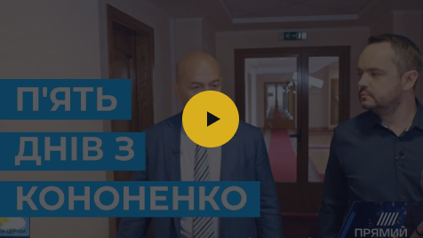

Ігор Віталійович Кононенко – український бізнесмен, меценат, у минулому політичний діяч, народний депутат VIII скликання Верховної Ради України, перший заступник голови фракції партії «Блок Петра Порошенка» (2014-2019).
Працюючи парламентарем, Ігор Кононенко займався реформою децентралізації. В основу цієї політики закладено положення Європейської хартії місцевого самоврядування та найефективніші світові стандарти суспільних відносин у цій сфері. Законодавчі ініціативи Кононенка:
615-VIII про внесення змін до Закону України «Про житлово-комунальні послуги» щодо належного соціально-економічного захисту учасників антитерористичної операції та членів їхніх сімей (про справедливе призначення та надання субсидій);
834-VIII Закон визначає правові, економічні, організаційні засади проведення державної реєстрації речових та інших прав, які підлягають реєстрації за цим законом, та їхніх обтяжень і спрямований на забезпечення визнання та захисту державою цих прав, створення умов для функціонування ринку нерухомого майна;
1762-VIII «Про джерела фінансування дорожнього господарства України» щодо вдосконалення механізму фінансування дорожньої галузі;
1763-VIII про внесення змін до Бюджетного кодексу України щодо удосконалення механізму фінансування дорожньої галузі;
2304-VIII про внесення змін до деяких законодавчих актів України у сфері будівництва та експлуатації автомобільних доріг;
834-VIII, 1762-VIII, 2304-VIII визначають особливості будівництва та експлуатації автомобільних доріг загального користування державного значення на умовах концесії. Підсилюють забезпечення прав та інтересів концесіонера (інвестора). Створюють прозорі умови у сфері будівництва доріг.
Серед бізнес-активів Ігоря Кононенка – публічне акціонерне товариство «Закритий корпоративний недиверсифікований інвестиційний фонд «ВІК». Кононенко є акціонером Міжнародного інвестиційного банку та засновником Міжнародної тенісної академії (м. Київ).
Ігор Кононенко є засновником Благодійної організації «Благодійний Фонд Ігоря Кононенка», яким керує його дружина Лілія Кононенко.
Фільм-інтерв’ю про Ігоря Віталійовича